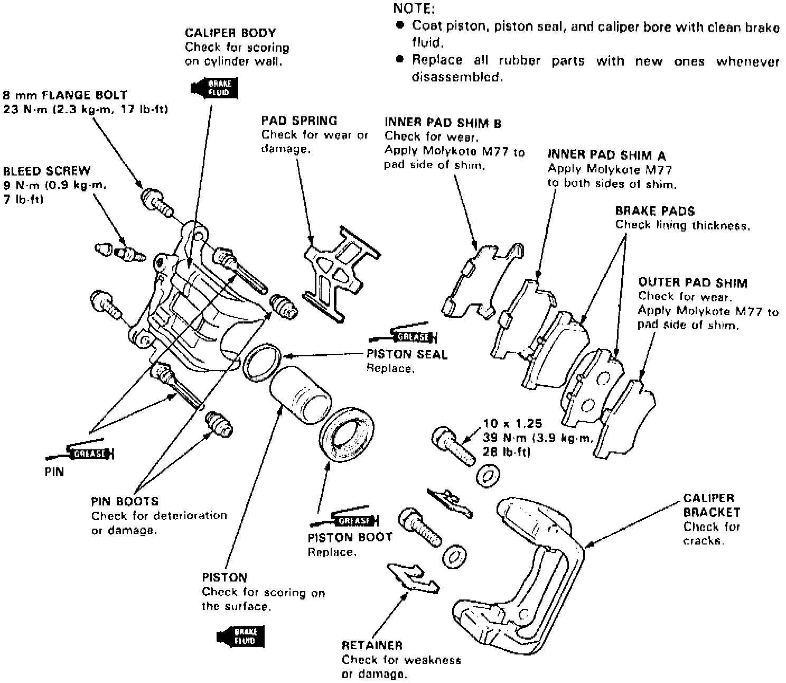

Operation CHARM
: Car repair manuals for everyone.
Home
>>
Acura
>>
1993
>>
Legend Coupe V6-3206cc 3.2L SOHC FI
>>
Repair and Diagnosis
>>
Brakes and Traction Control
>>
Hydraulic System
>>
Brake Caliper
>>
Service and Repair
>>
Rear
Rear
Fig. 6 Exploded View Of Rear Disc Brake Assembly:

Refer to
Fig. 6
and to
Brake Caliper
/Service and Repair
for rear caliper service.